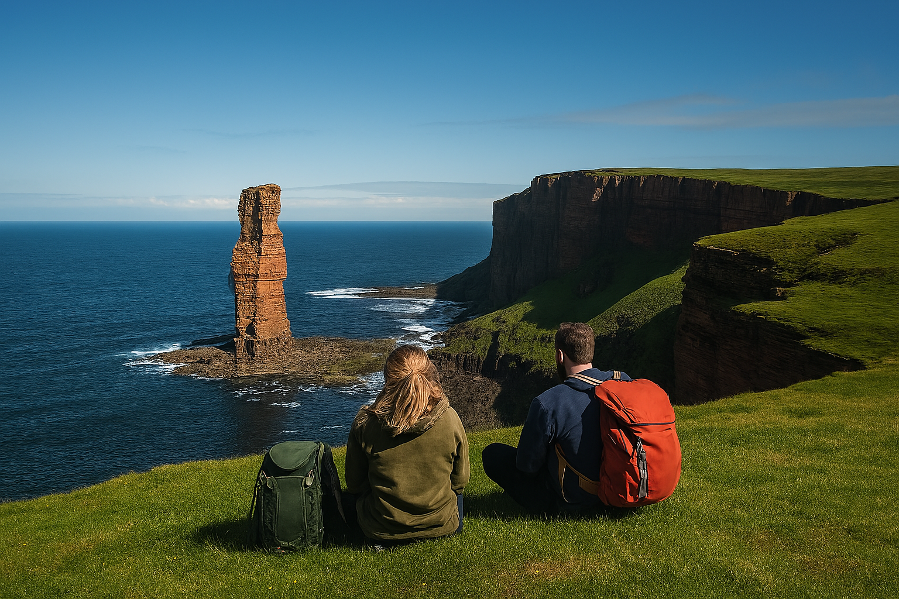
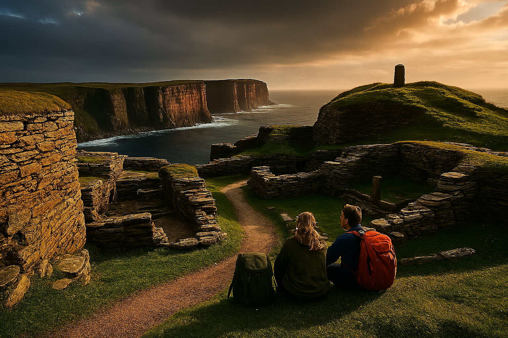

Culture and Events
Things to do
Orkney, across its several islands, offers a dynamic mix of nature, culture, history and adventure.
History and Heritage
Most recently at Scapa Flow during the world wars, all the way back to being part of the Norwegian crown during the Viking era. Orkney has always played a key part in history.
Local Traditions and Culture
Tradition here isn't just rediscovery its been passed down through generations, still part of everyday life for Orcadians.